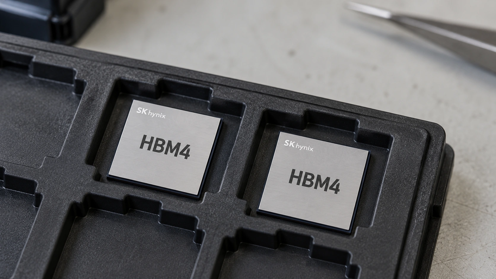

SK hynix Reports Record Profit as AI Memory Demand Drives Expansion
Quarterly revenue reached 104.6 trillion won. Long-term customer agreements and planned shareholder returns put capacity and cash allocation in focus.

SK hynix reported record third-quarter revenue and operating profit on Wednesday as spending on artificial intelligence infrastructure supported demand for its memory chips. Revenue reached 104.6 trillion won and operating profit totaled 83.3 trillion won, according to the company's preliminary results. The figures put the economics of supplying AI hardware back at the center of a market debating the cost of the buildout.
The announcement combined current earnings with commitments over future production and capital returns. Reuters reported that the chipmaker plans approximately 100 trillion won in shareholder returns for 2026. That is a company plan, not a statement that the entire amount was distributed on Wednesday. The timing and form of the payments matter alongside the headline total.
For readers following American technology companies, the connection runs through their supply chains. Cloud capacity requires processors, memory, storage and power. Suppliers can benefit from those purchases before customers establish the long-term profitability of the services running on the equipment. Our AI monetization analysis separates infrastructure revenue from the returns earned by the companies paying for it.
HBM4 moves from a technical milestone to a revenue product
The company expects HBM4 to exceed HBM3E in both shipment volume and revenue in the fourth quarter. HBM means high-bandwidth memory: multiple memory chips are connected vertically to move data rapidly within advanced computing systems. SK hynix announced completion of HBM4 development in September 2025. Wednesday's new information concerns the product's commercial ramp, rather than its initial invention.
Memory is important because processing power alone does not determine how quickly a system can complete work. Data must reach the processors, and the components must operate together within practical limits on energy and heat. Faster memory can relieve a bottleneck, but a component specification should not be treated as a guaranteed improvement in every customer's application.
This is the same distinction discussed in TTN's guide to AI chip constraints. The economically useful milestone is reliable output that customers can install and use. Product development, production readiness, shipments and service revenue occur at different stages. Investors need evidence about each stage instead of assuming that one announcement proves the whole chain is complete.
Long-term orders make expansion easier to plan
Reuters reported that SK hynix has long-term agreements with 14 major customers covering more than half of its production capacity for 2027 and 2028. The arrangements give the manufacturer a firmer basis for planning facilities and equipment. They should not be read as a public disclosure of every contract's price, cancellation rights or final profit margin.
A capacity commitment and recognized revenue answer different questions. One concerns future demand; the other concerns products and services already delivered under the relevant accounting rules. When a factory requires large spending before it generates sales, the gap between those stages becomes a financing issue. Agreements can reduce uncertainty without making delivery, production cost or customer concentration irrelevant.
SK hynix expects demand to exceed supply through 2030. That remains management's forecast. It helps explain the company's expansion strategy, but does not establish what prices or competitive conditions will be when new facilities operate. Our coverage of AI infrastructure delivery examines the related problem of matching spending commitments with usable capacity.
Cash allocation now matters as much as growth
Yonhap reported that the company had suspended plans to list its U.S. subsidiary Solidigm, following shareholder opposition and scrutiny of the proposal. A separate listing could raise outside money, while retaining ownership leaves financing and future returns within the existing corporate structure. The choice affects how the expansion burden and its potential rewards are shared.
The shareholder-return announcement makes that allocation decision more visible. A manufacturer can invest in additional production, retain liquidity, distribute cash or repurchase shares. Those uses compete for resources even during an exceptionally profitable period. The next meaningful evidence will be delivered output, completed payments and the spending required to maintain production growth. Record quarterly profit establishes the strength of current demand; execution will determine how much value remains after the next investment cycle.
Sources and methodology
Sources checked October 28, 2026. Company statements and reported findings are attributed in the text. Explanations of financial and operational implications are TTN editorial analysis.